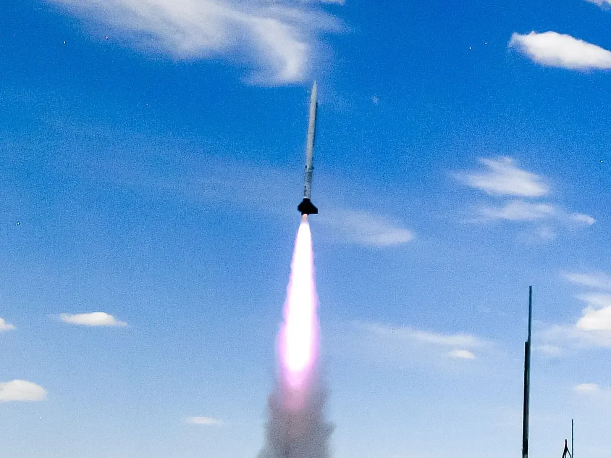
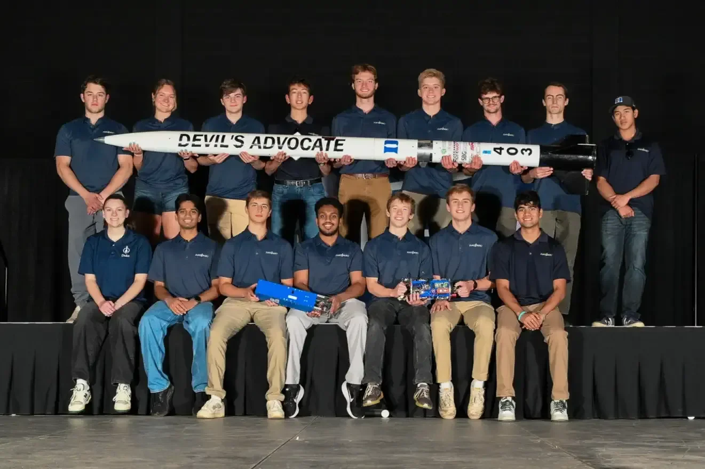
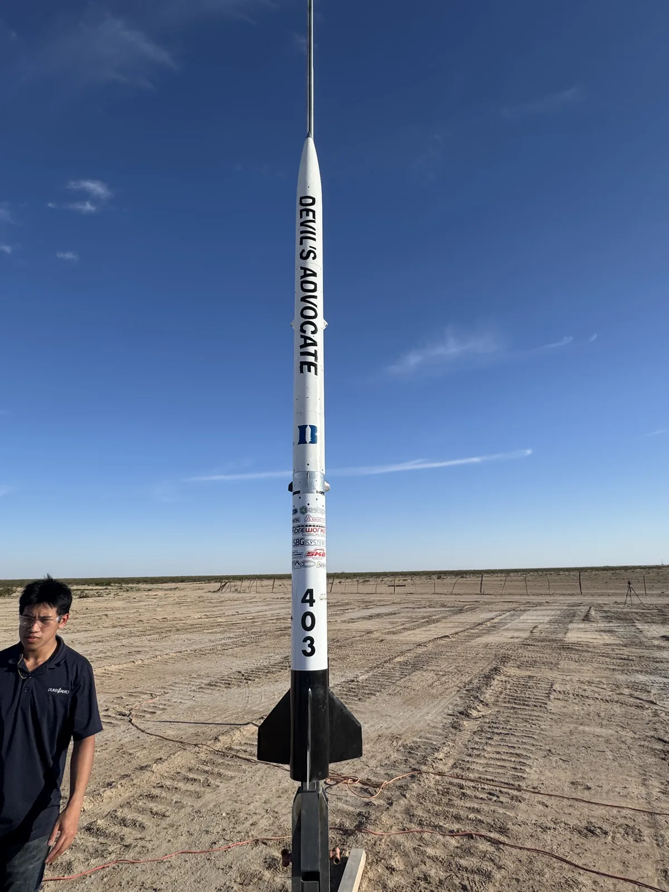
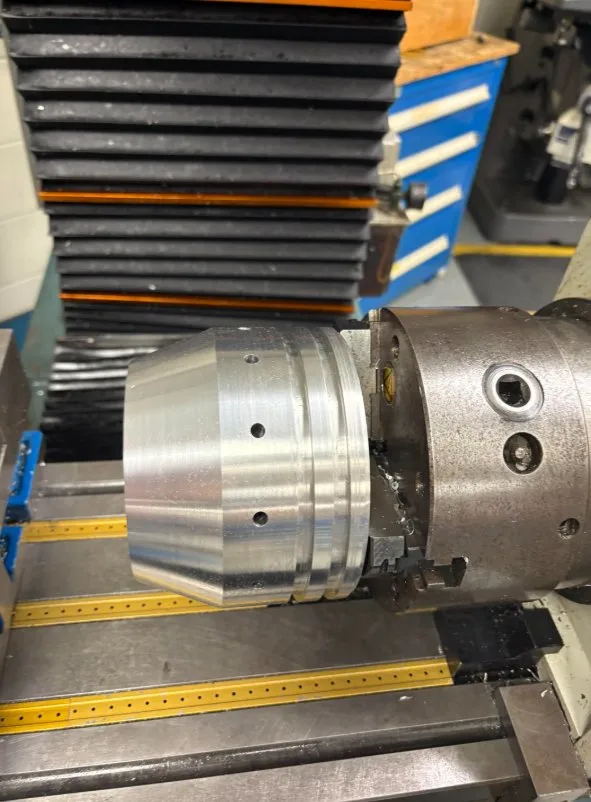
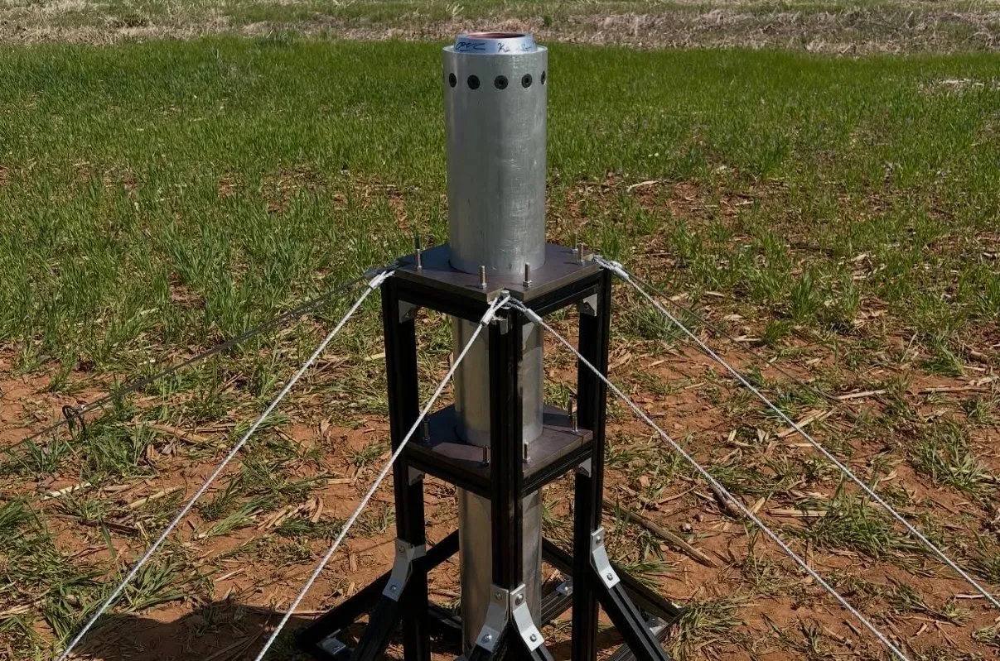
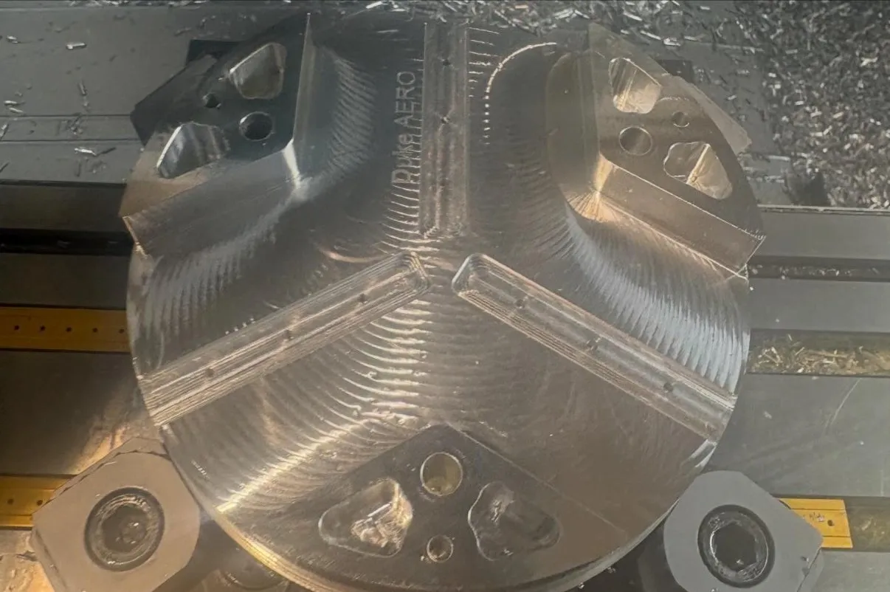
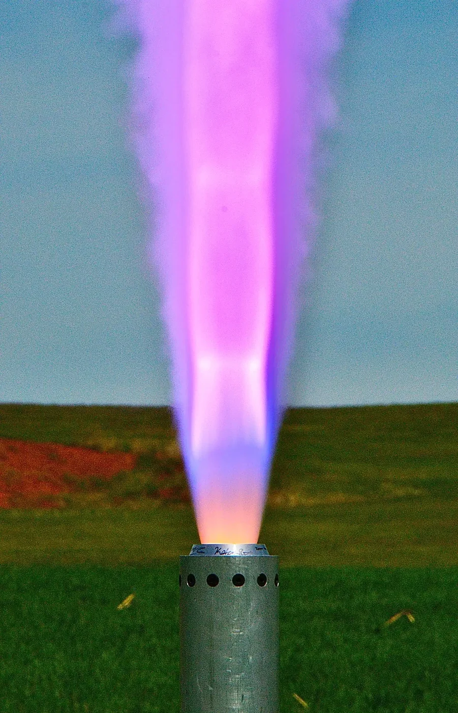

Devil's Advocate
30k-SRAD Solid Propulsion: IREC 2026
My Role
I machined the 6061 aluminum nozzle casing on a CNC lathe and made the canard and air brake housing components on a Viwa CNC mill.



I also helped mix propellant, cut pre-impregnated carbon fiber, helped with layup and the static hot fire test, and joined the team at IREC in Midland, Texas. The nozzle and casing survived the full-duration static hot fire and launch, and the team placed 3rd in the 30,000 ft SRAD propulsion category at IREC 2026.
The team's rocket
- Duke Aero's 3rd vehicle in the 30k-SRAD category
- 11.5 ft tall and 126 lb
- Student-built O-4384 solid motor: 37,700 Ns total impulse and ~8 kN max thrust
- Mach 1.7
- Kratos, a 5U CubeSat payload, deployed at apogee
- Second-generation control stack with airbrakes and roll-stabilizing canards



